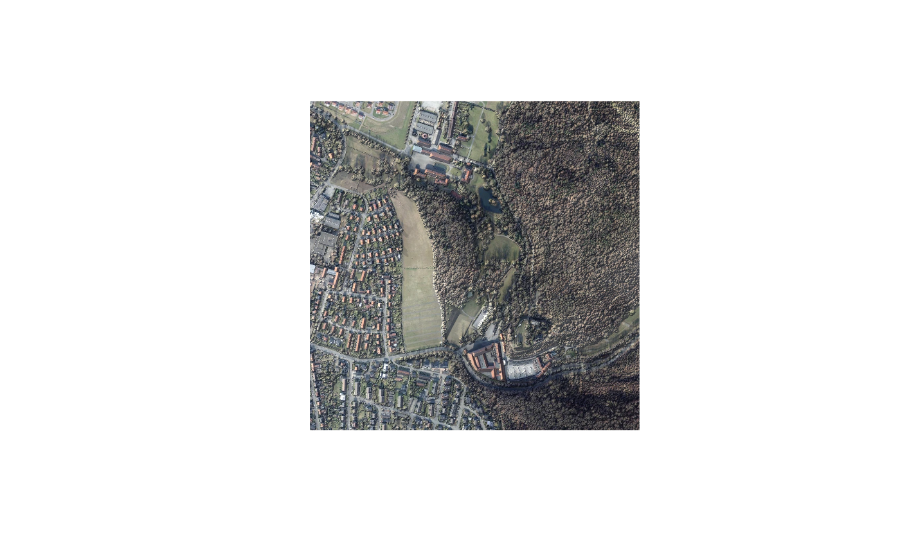
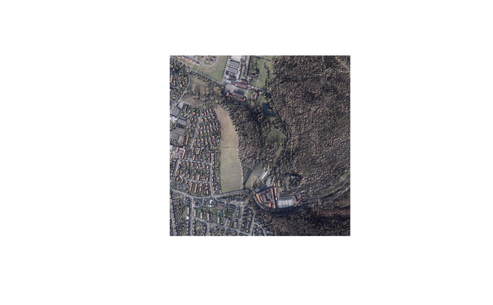

Lights an aerial photo with the terrain beneath it, the way a rendered landscape model is lit: a warm sun on slopes that face it, soft cast shadows, cool sky light that colours the shadows, and less of that sky light in enclosed ground. The result reads as a small physical model rather than a flat photo with shading laid over it.
Usage
rvt_relight(
ortho,
dem,
out_path = fs::file_temp(ext = "tif"),
style = "default",
sun_azimuth = NULL,
sun_elevation = NULL,
softness = NULL,
reach = NULL,
saturation = NULL,
contrast = NULL,
vegetation = NULL,
sun_strength = NULL,
sky_strength = NULL,
bounce = NULL,
occlusion = NULL,
sun_color = NULL,
sky_color = NULL,
quality = 90,
tile_size = NULL,
threads = rvt_threads(),
overwrite = FALSE,
progress = FALSE
)Arguments
- ortho
path to a three-band orthophoto
- dem
surface or terrain model covering the orthophoto's extent, or a vector of paths to mosaic. Its resolution may differ from the photo's by a whole factor: a 1 m surface under a 0.2 m photo is lit at 1 m and the light upsampled, so the result keeps the photo's full resolution.
- out_path
where to write; defaults to a temporary file
- style
name of a style in rvt_relight_styles (default
"default")- sun_azimuth, sun_elevation
sun position in degrees
- softness
spread of the sun positions averaged for soft shadows, in degrees; 0 for hard shadows
- reach
how far shadows are traced, in map units
- saturation
colour strength of the photo; 1 leaves it unchanged
- contrast
contrast of the result; 1 leaves it unchanged
- vegetation
extra colour given to green ground only, 0 for none. Deepens foliage, pulls warm greens apart from cool ones and separates light from dark canopy, leaving roofs, roads, water and bare soil alone
- sun_strength, sky_strength
strength of the sun and sky light
- bounce
share of sun light that still reaches ground in cast shadow
- occlusion
how much sky light enclosed ground loses, 0 to 1
- sun_color, sky_color
colours of the sun and sky light
- quality
WebP quality, 1 to 100 (default 90)
- tile_size
tile edge in pixels; NULL picks a size targeting roughly 256 MB per working matrix
- threads
C++ threads (see
rvt_threads())- overwrite
recompute even if
out_pathexists- progress
report per-tile progress
Details
Use a surface model for dem when the photo shows trees and buildings,
so that they cast shadows too, and a terrain model when you want only the
shape of the ground.
How it works
Hillshade, sky-view factor and cast shadow are computed from dem. Shadows
are averaged over sun positions softness degrees apart, which softens
their edges. Light is then built per cell as sun light plus sky light:
sun light:
sun_colortimessun_strength, scaled by how squarely the ground faces the sun, and reduced in cast shadow to a fractionbounceof full strength rather than to nothing;sky light:
sky_colortimessky_strength, reduced by up toocclusionwhere the sky-view factor says the ground is enclosed.
The photo's colours are strengthened by saturation, multiplied by that
light, and given contrast. Because the light is coloured, shadows pick up
a cool cast from the sky light; the tint is subtle in deep shadow, where
little light of any colour remains.
Sunlit open ground keeps close to the photo's brightness, but anything in
shadow is darker, so heavily wooded or built-up areas come out noticeably
darker overall. Raise bounce or lower occlusion to lighten them.
Styles
style picks a named set of settings from rvt_relight_styles, such as
"golden_hour" or "winter". Any setting given here overrides the style,
so style = "winter", sun_elevation = 10 is a winter light with an even
lower sun.
Output
A three-band, 8-bit Cloud-Optimized GeoTIFF compressed with WebP. quality
trades file size for fidelity; the default of 90 is visually lossless for
imagery at typical viewing sizes.
Give out_path a .webp or .jpg extension to write a plain picture
instead, for web pages and reports: no georeferencing, and no GeoTIFF made
along the way. WebP is the smaller of the two; JPEG is readable everywhere
and allows larger images. See rvt_image() for the comparison.
See also
rvt_relight_styles, rvt_blend() for general layer blending,
rvt_data_lgln() for sample data
Examples
# \donttest{
pt <- c(9.9464, 51.6317) # Burg Hardenberg
rgb <- rvt_data_lgln(pt, "rgb", res = 1)
dsm <- rvt_data_lgln(pt, "dsm")
rgb |> rvt_relight(dsm) |> rvt_plot(minmax_def = c(0, 0, 0, 255, 255, 255))

rgb |> rvt_relight(dsm, style = "golden_hour") |>
rvt_plot(minmax_def = c(0, 0, 0, 255, 255, 255))

# }